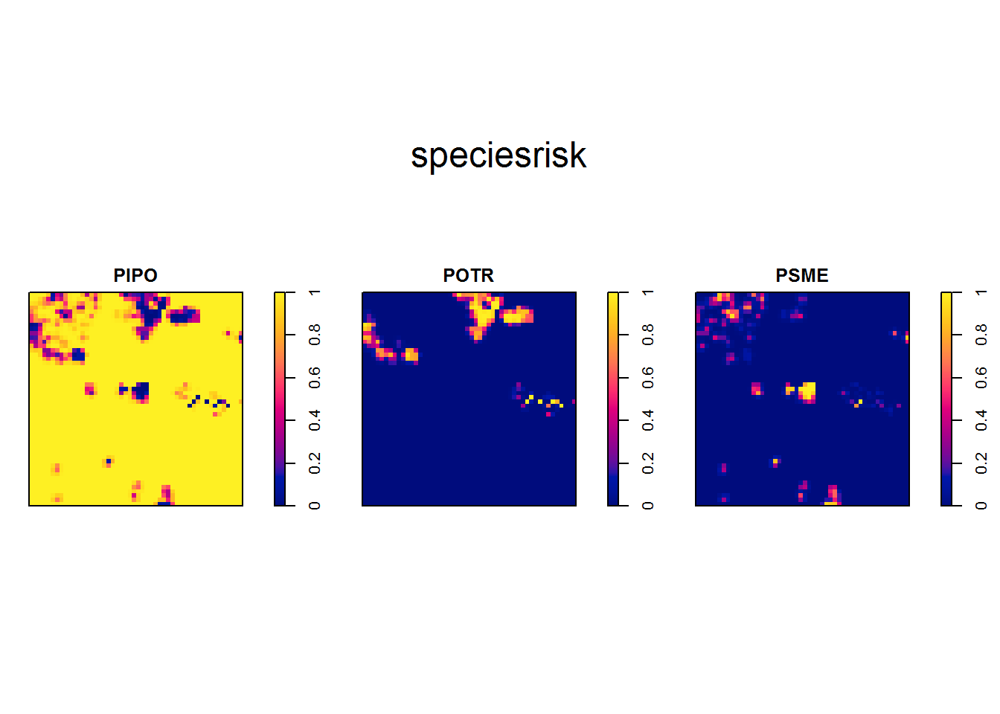
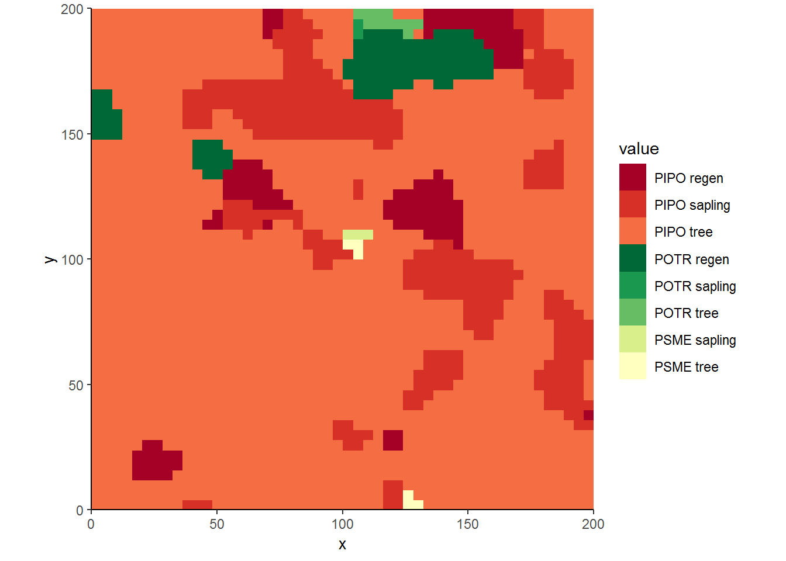
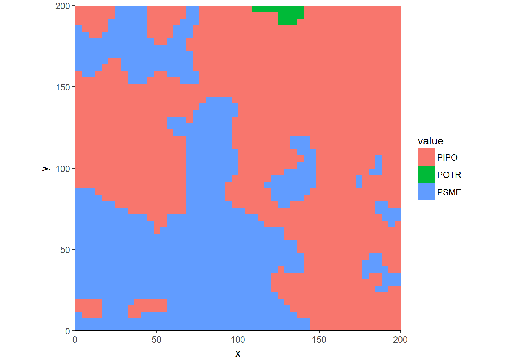
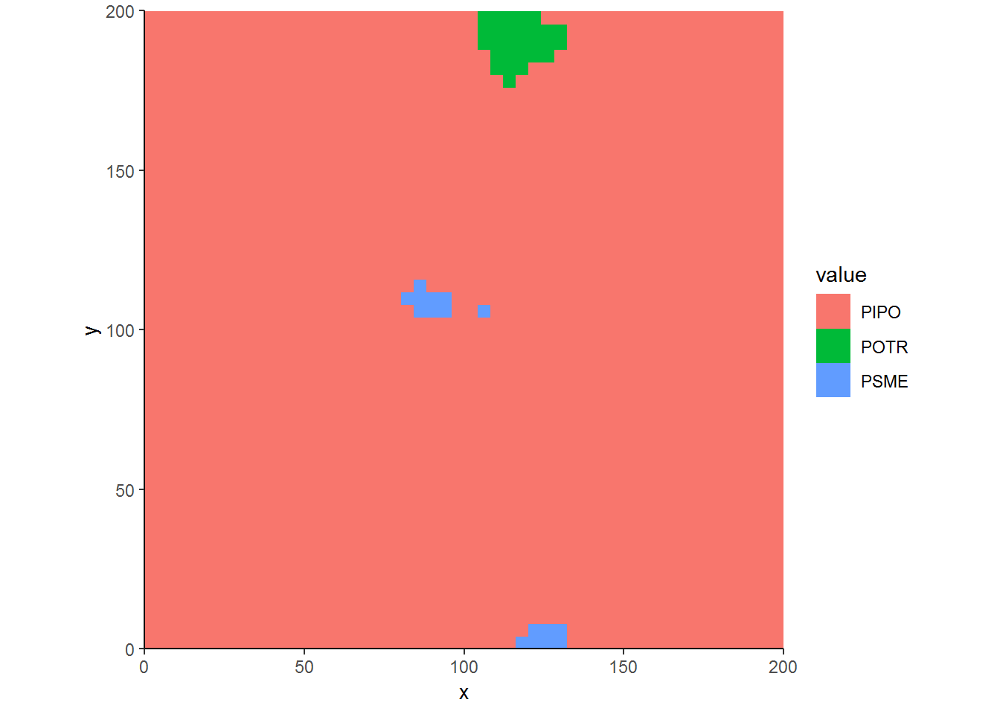

A few years ago, Kaggle held a competition to predict forest cover types using machine learning techniques. The data, taken from the Arapaho-Roosevelt National Forest here in Colorado and provided by the UCI Machine Learning Repository, contained a stack of rasters such as elevation, aspect, hillshade, distance to past fires, roads, and waterways. Competitors are supposed to use a subset of the current typology of forest cover to build and train machine learning algorithms which are then applied to a test set of forest cover types. This process works great for purposes such as forest planning or landscape ecology studies where 30-m resolution is sufficient.
But what if the ecological relationship of interest occurs at a much finer resolution and one would like to relate within-plot variability of some measure to an overstory-based typology. This post dives into using Spatstat to transform point-based observations to two-dimensional surfaces with categorical values.
For this exercise, we will look at stem-map data used in Ziegler et al. (2017)1. We will focus on a specific site near Read Feather Lake, Colorado which was stem-mapped after a cutting was performed. We will use all of the observed points (standing trees and stumps, the trees existing before cutting).
install.packages('spatstat') #Download if you do not have
install.packages('ggplot2') #Download if you do not havelibrary(spatstat)
library(ggplot2)
trees = read.table("site_content/data/redfeather.txt", header=T)
head(trees)| type | species | x_m | y_m | ht_m | dbh_cm |
|---|---|---|---|---|---|
| Tree | PIPO | 79.18 | 36.87 | 1.38 | 1.78 |
| Stump | PSME | 50.34 | 186.39 | 1.38 | 3.05 |
| Tree | PIPO | 60.66 | 88.02 | 1.42 | 2.03 |
| Tree | PIPO | 181.24 | 146.21 | 1.43 | 1.02 |
| Tree | PIPO | 113.57 | 191.69 | 1.45 | 2.03 |
| Tree | PIPO | 169.03 | 25.00 | 1.46 | 1.52 |
In the structure of trees, we have the type of observation, tree or strump, the x and y coordinates, trees heights and diameter at breast height of trees. For this post, we will analyze pre-treatment structure. Now let’s create a ppp data type so that Spatstat can work with the data2. We will also attribute marks to these points using 4-letter species codes.

treemap = ppp(trees$x_m, trees$y_m, c(0,200), c(0,200),
unitname=c("meter","meter"), marks = trees$species)
treemap## Marked planar point pattern: 2053 points
## Multitype, with levels = PIPO, POTR, PSME
## window: rectangle = [0, 200] x [0, 200] meterThe map shows that quaking aspen (POTR) and Douglas-fir (PSME) are concentrated in a subset of the plot while ponderosa pine (PIPO) are almost everywhere.
####Typing by species abundance
So we can already guess where forest types ought to appear from our analysis. To assign cover types, we will use relrisk. This function uses a kernel smoother to estimate a surface of likelihood of species occurrence using species’ point densities. In this example, we will define the kernel’s bandwidth and stipulate the resolution of the output image.
covermap = im.apply(speciesrisk, which.max)
cover = levels(marks(treemap))
covermap = eval.im(cover[covermap])
covermap = as.data.frame(covermap)
ggplot(covermap, aes(x, y, fill = value)) + geom_raster() +
theme_classic() + coord_equal(expand=FALSE) ####Typing by species and size class abundance In the next step, we will further disaggregate cover types by size classes. For illustration, we will assume regeneration are those trees with diameter at breast height (dbh) less than 5 cm, mature trees have a dbh over 13 cm, and saplings are between the breakpoints. Notice that in this example I used a wider bandwidth (sigma = 6) to gloss over fine-scale detail.
trees$sizeclass = "sapling"
trees$sizeclass[trees$dbh_cm < 5] = "regen"
trees$sizeclass[trees$dbh_cm > 13] = "tree"
trees$sizecoverclass = paste(trees$species, trees$sizeclass)
marks(treemap) = as.factor(trees$sizecoverclass)
classrisk = relrisk(treemap, sigma = 6, dimyx = 50)
covermap = im.apply(classrisk, which.max)
cover = levels(marks(treemap))
covermap = as.data.frame(eval.im(cover[covermap]))
cols = c(
"PIPO regen" = "#a50026", "PIPO sapling" = "#d73027",
"PIPO tree" = "#f46d43", "POTR regen" = "#006837",
"POTR sapling" = "#1a9850", "POTR tree" = "#66bd63",
"PSME sapling" = "#d9ef8b", "PSME tree" = "#ffffbf"
)
ggplot(covermap, aes(x, y, fill = value)) + geom_raster() +
scale_fill_manual(values = cols) +
theme_classic() + coord_equal(expand=FALSE) 
In this analysis, we see that most of the plot consists of ponderosa pine trees, but patches of seedlings and regeneration do exist. We can also note that most quaking aspen occur in regeneration patches.####Typing by basal area
One thing an ecologist might note is that larger trees might have a larger influence on their immediate environment than smaller trees. If so, it makes sense to weight the typology by tree size. Here we will use local basal area to determine which species are dominant.
trees$BA = trees$dbh_cm^2 * .00007854
PIPOmap = with(trees[trees$species == "PIPO", ], ppp(x_m, y_m, c(0, 200), c(0, 200),
marks = BA))
POTRmap = with(trees[trees$species == "POTR", ], ppp(x_m, y_m, c(0, 200), c(0, 200),
marks = BA))
PSMEmap = with(trees[trees$species == "PSME", ], ppp(x_m, y_m, c(0, 200), c(0, 200),
marks = BA))
CoverbyBA = im.apply(
list(
Smooth(PIPOmap, 6, dimyx = 50),
Smooth(POTRmap, 6, dimyx = 50),
Smooth(PSMEmap, 6, dimyx = 50)
),
which.max
)
CoverbyBA.df = as.data.frame(eval.im(c("PIPO", "POTR", "PSME")[CoverbyBA]))
ggplot(CoverbyBA.df, aes(x, y, fill = value)) + geom_raster() + theme_classic() + coord_equal(expand=FALSE) 
Woah! This doesn’t look right. Douglas-fir shouldn’t be the dominant cover type in half the plot. The way Smooth works is that takes the marks of trees where the trees exist and then interpolates everywhere else. So it naturally can take a few large Douglas-fir trees and smoothes those data points over the whole plot. So here smoothing doesn’t account for that fact that areas without Douglas-fir trees inherently have no Douglas-fir basal area3.
####Typing by basal area, weighted by abundance One workaround would be weigh tree basal area by tree density. So now we will use the density function which is a way to interpolate tree density based on the spatially-varying frequency of mapped trees.
CoverbyBA = im.apply(list(
Smooth(PIPOmap, 6, dimyx=50) * density(PIPOmap, 6, dimyx=50),
Smooth(POTRmap, 6, dimyx=50) * density(POTRmap, 6, dimyx=50),
Smooth(PSMEmap, 6, dimyx=50) * density(PSMEmap, 6, dimyx=50)),
which.max)
CoverbyBA.df = as.data.frame(eval.im(c("PIPO", "POTR", "PSME")[CoverbyBA]))
ggplot(CoverbyBA.df, aes(x, y, fill = value)) + geom_raster() + theme_classic() + coord_equal(expand=FALSE) 
Now this is better. It emphasizes the spatial dominance of ponderosa pine more so than our first typology. There is much less space assigned to quaking aspen in particular. That’s because, according to our second typology, many patches of quaking aspen were just regeneration so they contributed less basal area than surrounding ponderosa pine.What do you think? Can this approach be useful for categorizing intra-plot variation in your research? I’d like to hear your thoughts on using point-based spatial locations of trees, or any other discrete spatial events for that matter, to create raster images.
Ziegler, J.P., Hoffman, C., Battaglia, M. and Mell, W., 2017. Spatially explicit measurements of forest structure and fire behavior following restoration treatments in dry forests. Forest Ecology and Management, 386, pp.1-12.↩
Here, creation of spatstat will warn you that many points have duplicate locations. That’s okay for this analysis.↩
In general, smoothing alone is best left for when maps of points don’t display strong gradience over the study area↩